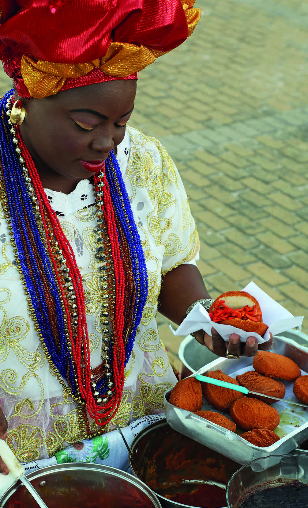

SABERES DA VIDA
NO DIA 25 DE NOVEMBRO, COMEMORA-SE O DIA NACIONAL DA BAIANA DO ACARAJÉ, PATRIMÔNIO CULTURAL IMATERIAL DO BRASIL DESDE 2005.
A TRADIÇÃO REMONTA À ÉPOCA EM QUE NEGRAS ESCRAVIZADAS PERCORRIAM A CIDADE COM O TABULEIRO NAS MÃOS, VENDENDO ACARAJÉ PARA COMPRAR A PRÓPRIA ALFORRIA E A DE SEUS FAMILIARES.
O ACARAJÉ TAMBÉM É CONHECIDO COMO AKARÁ.
NA LÍNGUA IORUBÁ, AKARÁ SIGNIFICA “BOLA DE FOGO” E JÉ, “COMER”.
NO TABULEIRO DAS BAIANAS TAMBÉM TEM COCADA, BOLINHO DE ESTUDANTE (FEITO COM TAPIOCA, COCO, AÇÚCAR E CANELA) E ABARÁ (BOLINHO DE FEIJÃO-FRADINHO COZIDO EM BANHO-MARIA E EMBRULHADO EM FOLHA DE BANANEIRA).

OBJETO EDUCACIONAL DIGITAL
Fabio Colombini
BAIANA DO ACARAJÉ NA PRAIA DE AMARALINA, MUNICÍPIO DE SALVADOR, BAHIA. FOTOGRAFIA DE 2018.
GLOSSÁRIO
ALFORRIA: LIBERDADE CONCEDIDA AO ESCRAVIZADO.
NOSSO DINHEIRO
A PRODUÇÃO E VENDA DO ACARAJÉ É UMA DAS PRIMEIRAS PROFISSÕES BRASILEIRAS COM PRESENÇA MACIÇA FEMININA.
QUANDO ESSA ATIVIDADE COMERCIAL COMEÇOU, A MOEDA QUE CIRCULAVA NO BRASIL ERA O RÉIS; ATUALMENTE É O REAL.
OBJETO EDUCACIONAL DIGITAL
Podcast - As belezas da cultura africana
Objeto Educacional Digital em formato de podcast, no qual são exploradas as belezas da cultura africana.
É um objeto digital que apresenta informações sobre a culinária baiana, com enfoque na história do acarajé.
O podcast também leva os estudantes a conhecer o conto africano “Os gêmeos”.
A história é uma lenda interessante de um povo chamado Fjort, que vive no continente africano, na região do Congo e do Zaire.
Com a finalização do conto, os ouvintes são instigados a criar o próprio fim para a história.